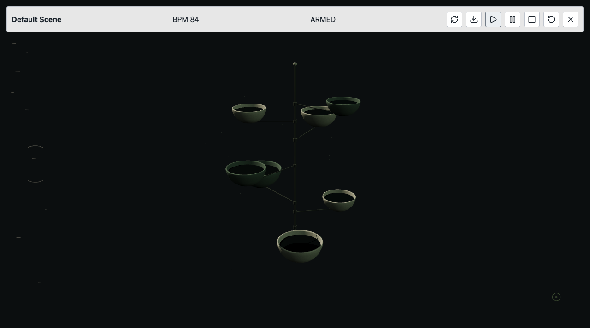
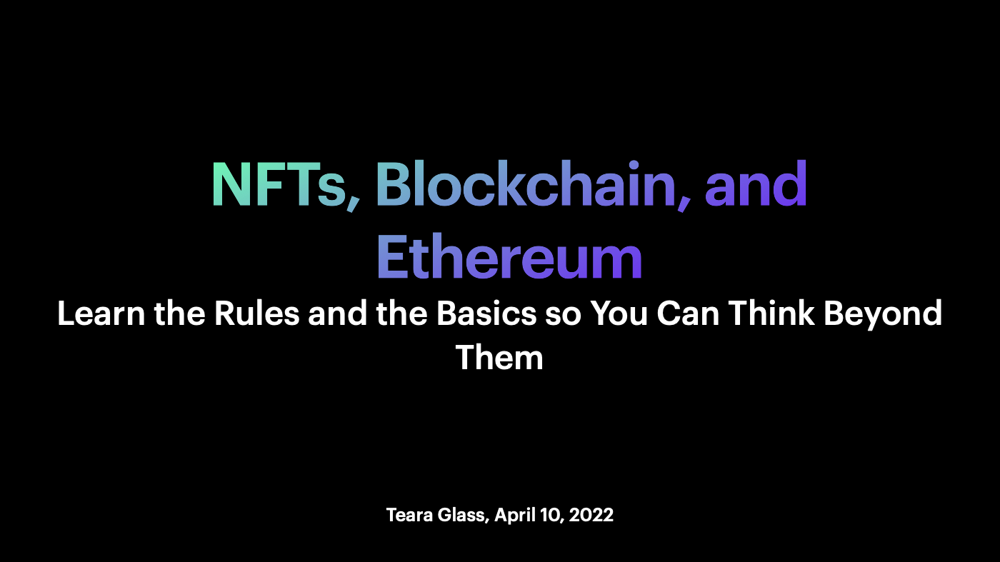

Delaney Mills
Systems, culture, interface.
I build creative tools and help people use complex systems. My work spans community education, startup operations, music, and AI-assisted software.
View the work ↓Selected work samples
Open the work.

AI changes you can inspectHymnal Engine: scoped agents compose music, reactive visuals, and overlays inside a live browser instrument.
See the prototype and verified demo ↗
Teaching complex systemsOmakasea: educational materials, creator onboarding, and community operations.
Read the case · open the workshop ↗ Supporting a working businessNewsletter design and digital publishing for October 7 Sales.
View the newsletter sample ↗ A playable browser instrumentLinked clocks, sound synthesis, and recording. Start audio inside the demo.
Play the Polyrhythmic Drum Machine ↗Selected work / 05
Working systems
with a pulse.
Each project is a live question made tangible: an instrument, a game, a simulation, a production system.
Applied systems / 05
Work that had
to function.
Operations, community, web infrastructure, bots, and Web3 work where the output had real people, deadlines, and consequences attached.
How I work
Concept →
useful artifact.
I use AI coding tools, creative software, and cultural research to move quickly from an unusual idea to something people can actually enter, test, perform with, or understand.
Experience